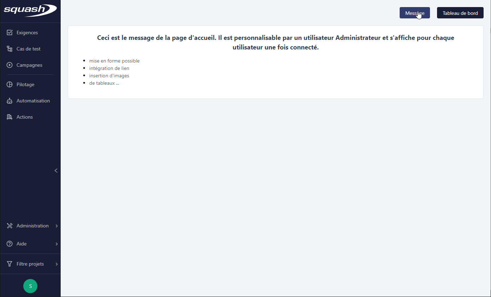
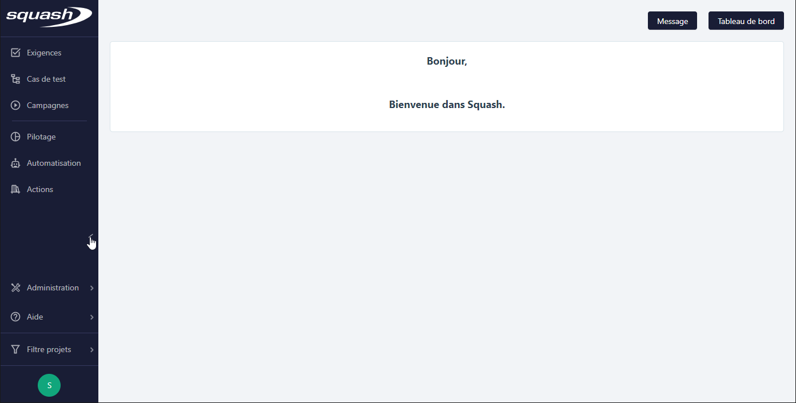
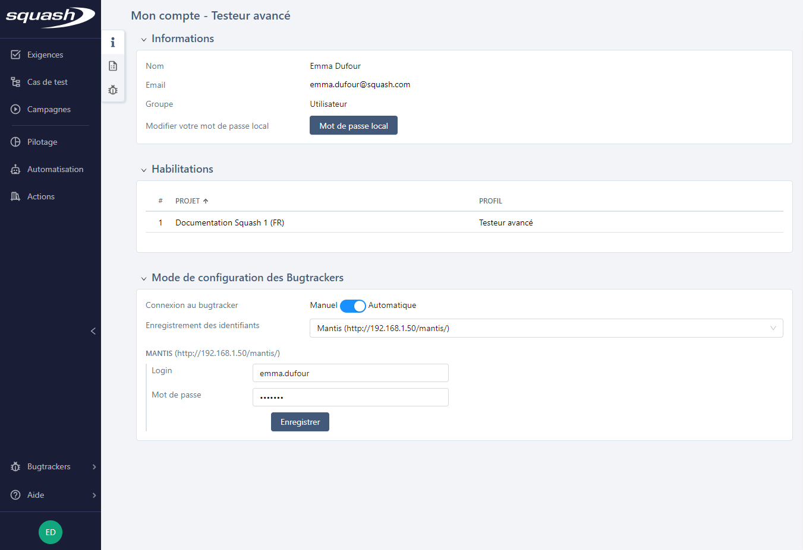
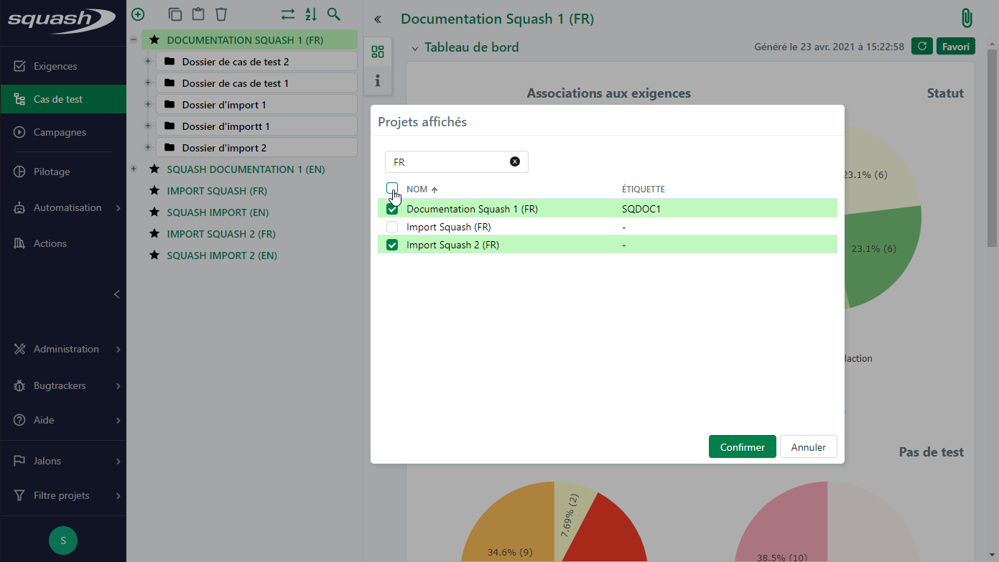
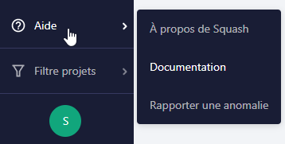

Squash Workspaces
The Squash Homepage
Once you have logged in, the app's homepage appears. You can then navigate between the different spaces.
By clicking on the [Message] button, you can see the homepage's Message (which can be customized by an Administrator).

If you have saved the dashboard as a Favorite for your homepage from the pilot workspace, the dashboard appears by clicking on the [Dashboard] button.

You can also access the homepage by clicking on the Squash logo on top of the sidebar.
Introduction of the Squash Workspaces
The Sidebar
The sidebar fixed on the left of the screen allows you to access any Squash workspace at any time.

When the sidebar is hidden, only the workspaces icons appear, thus leaving more workspace for you to view their content.

Requirements, Test Cases, and Campaigns Workspaces
These workspaces are at the core of software qualification. They allow you to: - create, organize, trace, and creating versions of your requirements; - create, manage, modularize, and use variables on your test cases; - manage, plan, and run your test campaigns.
Reporting Workspace
This workspace is dedicated to income monitoring. It is mainly intended for income project managers.
Automation Workspace
This workspace is dedicated to automation management within Squash.
Action Workspace
This workspace is dedicated to the pooling of test cases actions (Actions Library plugin is needed).
Info
The Settings menu is only accessible to Admin or Project Manager users.
My Account
You can access the My Account page by clicking on the icon with the user's initials at the foot of the sidebar.
Two links appear when you hover on this icon: "My Account" and "Log Out"
My Account
The "My Account" page contains user information. This information is organized under the following boxes:
Information
This box contains the current user's following details: their name, address, and their group (Admin or User). From this page, you can modify your e-mail address and/or your local password.
Clearance
This table allows you to visualize the user's projects and their permissions.
Bugtrackers Configuration Mode
This block allows you to manage the connection to the bugtrackers linked to the projects you are cleared to work on. When an admin selects the option "The users authenticate themselves" during their configuration of a bugtracker and when they are also part of a project the user is cleared to work on, then the user can choose either a manual or an automatic connection.
When "Manual" connection to the bugtracker is selected, the user must systematically connect to the bugtracker to declare or go through an anomaly by clicking on the [Login] button. When "Automatic" connection to the bugtracker is selected, the connection to the bugtracker starts automatically.
The box "Login details" contains the list of the bucktrackers linked to the user's projects. When the user saves their login information, they are automatically connected to the bugtracker in the app's different workspaces. You need to click on the [Save] to confirm the entry.

Logout
When you click on the sub-menu "Logout", you are disconnected from the app.
Projects Filter
Located in the sidebar, the menu Projects Filter allows you to select the projects you want to display in the app's different workspaces. Its way of operating is reminiscent of that of a library.
In this menu, the "All projects" options you to show all the projects whereas the "Multi-projects" option opens a new window where you can select projects. To select a project to include in the filter, check the case before its name then click on [Confirm]. To make the project selection process easier, you can use the dynamic search field to look for the projects Name and Tag.

Focus
The projects filter is applied by default on the Search pages.
Bugtrackers
In the Bugtrackers menu, which is located on the sidebar, you can see the list of all the bugtrackers associated to the projects the current user is cleared to work on.
When you click on its name, the bugtracker opens in a new tab or in an i-frame. Only the Jira and RTC bugtrackers can open in an i-frame.
Help
The Help menu located in the sidebar gives you access to 3 sub-menus:

About Squash
This pop-up indicates the Squash version in use, and links to the LGPL license and to credit the icons used in the app.
Resources
This link redirects you to Squash's online resources.
Report a Defect
This link redirects you to Mantis, the Squash tool which allows you to report the defects you have encountered while using the app. It is up to you to create an account to use this tool.